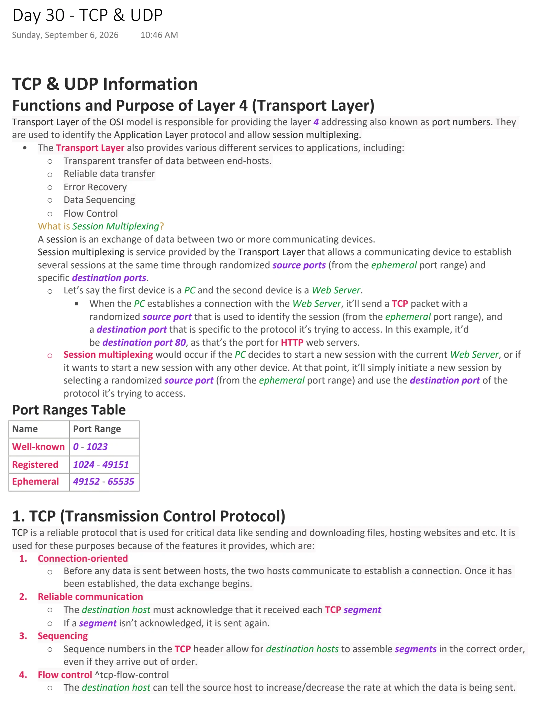
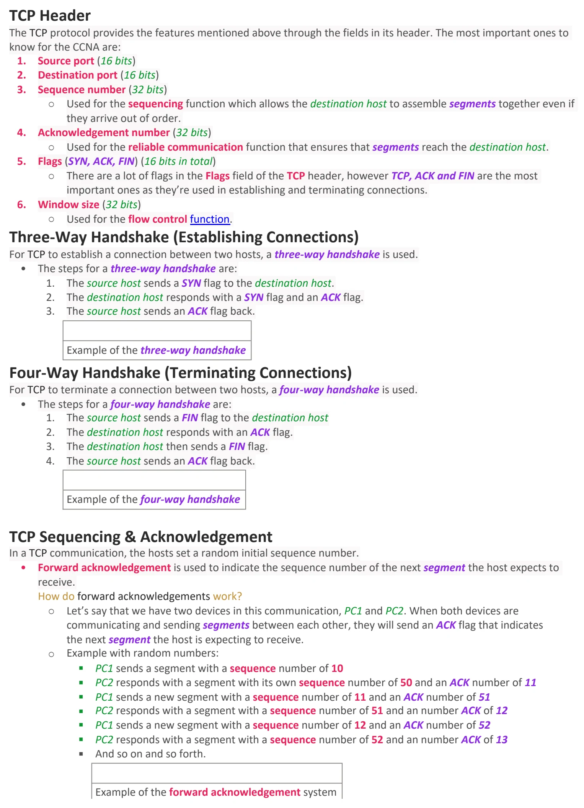
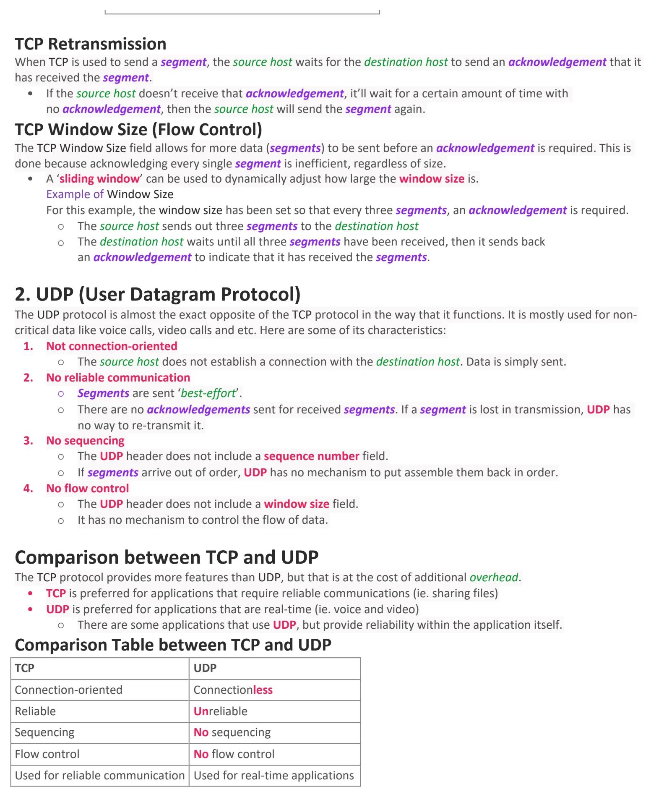

TCP & UDP
Download original PDF


Text view — TCP & UDP
Extracted from the original export. Diagrams and some formatting appear in the notes above.
Day 30 - TCP & UDP Sunday, September 6, 2026 10:46 AM TCP & UDP Information Functions and Purpose of Layer 4 (Transport Layer) Transport Layer of the OSI model is responsible for providing the layer 4 addressing also known as port numbers. They are used to identify the Application Layer protocol and allow session multiplexing. • The Transport Layer also provides various different services to applications, including: ○ Transparent transfer of data between end-hosts. ○ Reliable data transfer ○ Error Recovery ○ Data Sequencing ○ Flow Control What is Session Multiplexing? A session is an exchange of data between two or more communicating devices. Session multiplexing is service provided by the Transport Layer that allows a communicating device to establish several sessions at the same time through randomized source ports (from the ephemeral port range) and specific destination ports. ○ Let’s say the first device is a PC and the second device is a Web Server. § When the PC establishes a connection with the Web Server, it’ll send a TCP packet with a randomized source port that is used to identify the session (from the ephemeral port range), and a destination port that is specific to the protocol it’s trying to access. In this example, it’d be destination port 80, as that’s the port for HTTP web servers. ○ Session multiplexing would occur if the PC decides to start a new session with the current Web Server, or if it wants to start a new session with any other device. At that point, it’ll simply initiate a new session by selecting a randomized source port (from the ephemeral port range) and use the destination port of the protocol it’s trying to access. Port Ranges Table Name Port Range Well-known 0 - 1023 Registered 1024 - 49151 Ephemeral 49152 - 65535 1. TCP (Transmission Control Protocol) TCP is a reliable protocol that is used for critical data like sending and downloading files, hosting websites and etc. It is used for these purposes because of the features it provides, which are: 1. Connection-oriented ○ Before any data is sent between hosts, the two hosts communicate to establish a connection. Once it has been established, the data exchange begins. 2. Reliable communication ○ The destination host must acknowledge that it received each TCP segment ○ If a segment isn’t acknowledged, it is sent again. 3. Sequencing ○ Sequence numbers in the TCP header allow for destination hosts to assemble segments in the correct order, even if they arrive out of order. 4. Flow control ^tcp-flow-control ○ The destination host can tell the source host to increase/decrease the rate at which the data is being sent. TCP Header The TCP protocol provides the features mentioned above through the fields in its header. The most important ones to know for the CCNA are: 1. Source port (16 bits) 2. Destination port (16 bits) 3. Sequence number (32 bits) ○ Used for the sequencing function which allows the destination host to assemble segments together even if they arrive out of order. 4. Acknowledgement number (32 bits) ○ Used for the reliable communication function that ensures that segments reach the destination host. 5. Flags (SYN, ACK, FIN) (16 bits in total) ○ There are a lot of flags in the Flags field of the TCP header, however TCP, ACK and FIN are the most important ones as they’re used in establishing and terminating connections. 6. Window size (32 bits) ○ Used for the flow control function. Three-Way Handshake (Establishing Connections) For TCP to establish a connection between two hosts, a three-way handshake is used. • The steps for a three-way handshake are: 1. The source host sends a SYN flag to the destination host. 2. The destination host responds with a SYN flag and an ACK flag. 3. The source host sends an ACK flag back. Example of the three-way handshake Four-Way Handshake (Terminating Connections) For TCP to terminate a connection between two hosts, a four-way handshake is used. • The steps for a four-way handshake are: 1. The source host sends a FIN flag to the destination host 2. The destination host responds with an ACK flag. 3. The destination host then sends a FIN flag. 4. The source host sends an ACK flag back. Example of the four-way handshake TCP Sequencing & Acknowledgement In a TCP communication, the hosts set a random initial sequence number. • Forward acknowledgement is used to indicate the sequence number of the next segment the host expects to receive. How do forward acknowledgements work? ○ Let’s say that we have two devices in this communication, PC1 and PC2. When both devices are communicating and sending segments between each other, they will send an ACK flag that indicates the next segment the host is expecting to receive. ○ Example with random numbers: § PC1 sends a segment with a sequence number of 10 § PC2 responds with a segment with its own sequence number of 50 and an ACK number of 11 § PC1 sends a new segment with a sequence number of 11 and an ACK number of 51 § PC2 responds with a segment with a sequence number of 51 and an number ACK of 12 § PC1 sends a new segment with a sequence number of 12 and an ACK number of 52 § PC2 responds with a segment with a sequence number of 52 and an number ACK of 13 § And so on and so forth. Example of the forward acknowledgement system TCP Retransmission When TCP is used to send a segment, the source host waits for the destination host to send an acknowledgement that it has received the segment. • If the source host doesn’t receive that acknowledgement, it’ll wait for a certain amount of time with no acknowledgement, then the source host will send the segment again. TCP Window Size (Flow Control) The TCP Window Size field allows for more data (segments) to be sent before an acknowledgement is required. This is done because acknowledging every single segment is inefficient, regardless of size. • A ‘sliding window’ can be used to dynamically adjust how large the window size is. Example of Window Size For this example, the window size has been set so that every three segments, an acknowledgement is required. ○ The source host sends out three segments to the destination host ○ The destination host waits until all three segments have been received, then it sends back an acknowledgement to indicate that it has received the segments. 2. UDP (User Datagram Protocol) The UDP protocol is almost the exact opposite of the TCP protocol in the way that it functions. It is mostly used for non- critical data like voice calls, video calls and etc. Here are some of its characteristics: 1. Not connection-oriented ○ The source host does not establish a connection with the destination host. Data is simply sent. 2. No reliable communication ○ Segments are sent ‘best-effort’. ○ There are no acknowledgements sent for received segments. If a segment is lost in transmission, UDP has no way to re-transmit it. 3. No sequencing ○ The UDP header does not include a sequence number field. ○ If segments arrive out of order, UDP has no mechanism to put assemble them back in order. 4. No flow control ○ The UDP header does not include a window size field. ○ It has no mechanism to control the flow of data. Comparison between TCP and UDP The TCP protocol provides more features than UDP, but that is at the cost of additional overhead. • TCP is preferred for applications that require reliable communications (ie. sharing files) • UDP is preferred for applications that are real-time (ie. voice and video) ○ There are some applications that use UDP, but provide reliability within the application itself. Comparison Table between TCP and UDP TCP UDP Connection-oriented Connectionless Reliable Unreliable Sequencing No sequencing Flow control No flow control Used for reliable communication Used for real-time applications Day 30 - TCP & UDP Sunday, September 6, 2026 10:46 AM TCP & UDP Information Functions and Purpose of Layer 4 (Transport Layer) Transport Layer of the OSI model is responsible for providing the layer 4 addressing also known as port numbers. They are used to identify the Application Layer protocol and allow session multiplexing. • The Transport Layer also provides various different services to applications, including: ○ Transparent transfer of data between end-hosts. ○ Reliable data transfer ○ Error Recovery ○ Data Sequencing ○ Flow Control What is Session Multiplexing? A session is an exchange of data between two or more communicating devices. Session multiplexing is service provided by the Transport Layer that allows a communicating device to establish several sessions at the same time through randomized source ports (from the ephemeral port range) and specific destination ports. ○ Let’s say the first device is a PC and the second device is a Web Server. § When the PC establishes a connection with the Web Server, it’ll send a TCP packet with a randomized source port that is used to identify the session (from the ephemeral port range), and a destination port that is specific to the protocol it’s trying to access. In this example, it’d be destination port 80, as that’s the port for HTTP web servers. ○ Session multiplexing would occur if the PC decides to start a new session with the current Web Server, or if it wants to start a new session with any other device. At that point, it’ll simply initiate a new session by selecting a randomized source port (from the ephemeral port range) and use the destination port of the protocol it’s trying to access. Port Ranges Table Name Port Range Well-known 0 - 1023 Registered 1024 - 49151 Ephemeral 49152 - 65535 1. TCP (Transmission Control Protocol) TCP is a reliable protocol that is used for critical data like sending and downloading files, hosting websites and etc. It is used for these purposes because of the features it provides, which are: 1. Connection-oriented ○ Before any data is sent between hosts, the two hosts communicate to establish a connection. Once it has been established, the data exchange begins. 2. Reliable communication ○ The destination host must acknowledge that it received each TCP segment ○ If a segment isn’t acknowledged, it is sent again. 3. Sequencing ○ Sequence numbers in the TCP header allow for destination hosts to assemble segments in the correct order, even if they arrive out of order. 4. Flow control ^tcp-flow-control ○ The destination host can tell the source host to increase/decrease the rate at which the data is being sent. TCP Header The TCP protocol provides the features mentioned above through the fields in its header. The most important ones to know for the CCNA are: 1. Source port (16 bits) 2. Destination port (16 bits) 3. Sequence number (32 bits) ○ Used for the sequencing function which allows the destination host to assemble segments together even if they arrive out of order. 4. Acknowledgement number (32 bits) ○ Used for the reliable communication function that ensures that segments reach the destination host. 5. Flags (SYN, ACK, FIN) (16 bits in total) ○ There are a lot of flags in the Flags field of the TCP header, however TCP, ACK and FIN are the most important ones as they’re used in establishing and terminating connections. 6. Window size (32 bits) ○ Used for the flow control function. Three-Way Handshake (Establishing Connections) For TCP to establish a connection between two hosts, a three-way handshake is used. • The steps for a three-way handshake are: 1. The source host sends a SYN flag to the destination host. 2. The destination host responds with a SYN flag and an ACK flag. 3. The source host sends an ACK flag back. Example of the three-way handshake Four-Way Handshake (Terminating Connections) For TCP to terminate a connection between two hosts, a four-way handshake is used. • The steps for a four-way handshake are: 1. The source host sends a FIN flag to the destination host 2. The destination host responds with an ACK flag. 3. The destination host then sends a FIN flag. 4. The source host sends an ACK flag back. Example of the four-way handshake TCP Sequencing & Acknowledgement In a TCP communication, the hosts set a random initial sequence number. • Forward acknowledgement is used to indicate the sequence number of the next segment the host expects to receive. How do forward acknowledgements work? ○ Let’s say that we have two devices in this communication, PC1 and PC2. When both devices are communicating and sending segments between each other, they will send an ACK flag that indicates the next segment the host is expecting to receive. ○ Example with random numbers: § PC1 sends a segment with a sequence number of 10 § PC2 responds with a segment with its own sequence number of 50 and an ACK number of 11 § PC1 sends a new segment with a sequence number of 11 and an ACK number of 51 § PC2 responds with a segment with a sequence number of 51 and an number ACK of 12 § PC1 sends a new segment with a sequence number of 12 and an ACK number of 52 § PC2 responds with a segment with a sequence number of 52 and an number ACK of 13 § And so on and so forth. Example of the forward acknowledgement system TCP Retransmission When TCP is used to send a segment, the source host waits for the destination host to send an acknowledgement that it has received the segment. • If the source host doesn’t receive that acknowledgement, it’ll wait for a certain amount of time with no acknowledgement, then the source host will send the segment again. TCP Window Size (Flow Control) The TCP Window Size field allows for more data (segments) to be sent before an acknowledgement is required. This is done because acknowledging every single segment is inefficient, regardless of size. • A ‘sliding window’ can be used to dynamically adjust how large the window size is. Example of Window Size For this example, the window size has been set so that every three segments, an acknowledgement is required. ○ The source host sends out three segments to the destination host ○ The destination host waits until all three segments have been received, then it sends back an acknowledgement to indicate that it has received the segments. 2. UDP (User Datagram Protocol) The UDP protocol is almost the exact opposite of the TCP protocol in the way that it functions. It is mostly used for non- critical data like voice calls, video calls and etc. Here are some of its characteristics: 1. Not connection-oriented ○ The source host does not establish a connection with the destination host. Data is simply sent. 2. No reliable communication ○ Segments are sent ‘best-effort’. ○ There are no acknowledgements sent for received segments. If a segment is lost in transmission, UDP has no way to re-transmit it. 3. No sequencing ○ The UDP header does not include a sequence number field. ○ If segments arrive out of order, UDP has no mechanism to put assemble them back in order. 4. No flow control ○ The UDP header does not include a window size field. ○ It has no mechanism to control the flow of data. Comparison between TCP and UDP The TCP protocol provides more features than UDP, but that is at the cost of additional overhead. • TCP is preferred for applications that require reliable communications (ie. sharing files) • UDP is preferred for applications that are real-time (ie. voice and video) ○ There are some applications that use UDP, but provide reliability within the application itself. Comparison Table between TCP and UDP TCP UDP Connection-oriented Connectionless Reliable Unreliable Sequencing No sequencing Flow control No flow control Used for reliable communication Used for real-time applications Day 30 - TCP & UDP Sunday, September 6, 2026 10:46 AM TCP & UDP Information Functions and Purpose of Layer 4 (Transport Layer) Transport Layer of the OSI model is responsible for providing the layer 4 addressing also known as port numbers. They are used to identify the Application Layer protocol and allow session multiplexing. • The Transport Layer also provides various different services to applications, including: ○ Transparent transfer of data between end-hosts. ○ Reliable data transfer ○ Error Recovery ○ Data Sequencing ○ Flow Control What is Session Multiplexing? A session is an exchange of data between two or more communicating devices. Session multiplexing is service provided by the Transport Layer that allows a communicating device to establish several sessions at the same time through randomized source ports (from the ephemeral port range) and specific destination ports. ○ Let’s say the first device is a PC and the second device is a Web Server. § When the PC establishes a connection with the Web Server, it’ll send a TCP packet with a randomized source port that is used to identify the session (from the ephemeral port range), and a destination port that is specific to the protocol it’s trying to access. In this example, it’d be destination port 80, as that’s the port for HTTP web servers. ○ Session multiplexing would occur if the PC decides to start a new session with the current Web Server, or if it wants to start a new session with any other device. At that point, it’ll simply initiate a new session by selecting a randomized source port (from the ephemeral port range) and use the destination port of the protocol it’s trying to access. Port Ranges Table Name Port Range Well-known 0 - 1023 Registered 1024 - 49151 Ephemeral 49152 - 65535 1. TCP (Transmission Control Protocol) TCP is a reliable protocol that is used for critical data like sending and downloading files, hosting websites and etc. It is used for these purposes because of the features it provides, which are: 1. Connection-oriented ○ Before any data is sent between hosts, the two hosts communicate to establish a connection. Once it has been established, the data exchange begins. 2. Reliable communication ○ The destination host must acknowledge that it received each TCP segment ○ If a segment isn’t acknowledged, it is sent again. 3. Sequencing ○ Sequence numbers in the TCP header allow for destination hosts to assemble segments in the correct order, even if they arrive out of order. 4. Flow control ^tcp-flow-control ○ The destination host can tell the source host to increase/decrease the rate at which the data is being sent. TCP Header The TCP protocol provides the features mentioned above through the fields in its header. The most important ones to know for the CCNA are: 1. Source port (16 bits) 2. Destination port (16 bits) 3. Sequence number (32 bits) ○ Used for the sequencing function which allows the destination host to assemble segments together even if they arrive out of order. 4. Acknowledgement number (32 bits) ○ Used for the reliable communication function that ensures that segments reach the destination host. 5. Flags (SYN, ACK, FIN) (16 bits in total) ○ There are a lot of flags in the Flags field of the TCP header, however TCP, ACK and FIN are the most important ones as they’re used in establishing and terminating connections. 6. Window size (32 bits) ○ Used for the flow control function. Three-Way Handshake (Establishing Connections) For TCP to establish a connection between two hosts, a three-way handshake is used. • The steps for a three-way handshake are: 1. The source host sends a SYN flag to the destination host. 2. The destination host responds with a SYN flag and an ACK flag. 3. The source host sends an ACK flag back. Example of the three-way handshake Four-Way Handshake (Terminating Connections) For TCP to terminate a connection between two hosts, a four-way handshake is used. • The steps for a four-way handshake are: 1. The source host sends a FIN flag to the destination host 2. The destination host responds with an ACK flag. 3. The destination host then sends a FIN flag. 4. The source host sends an ACK flag back. Example of the four-way handshake TCP Sequencing & Acknowledgement In a TCP communication, the hosts set a random initial sequence number. • Forward acknowledgement is used to indicate the sequence number of the next segment the host expects to receive. How do forward acknowledgements work? ○ Let’s say that we have two devices in this communication, PC1 and PC2. When both devices are communicating and sending segments between each other, they will send an ACK flag that indicates the next segment the host is expecting to receive. ○ Example with random numbers: § PC1 sends a segment with a sequence number of 10 § PC2 responds with a segment with its own sequence number of 50 and an ACK number of 11 § PC1 sends a new segment with a sequence number of 11 and an ACK number of 51 § PC2 responds with a segment with a sequence number of 51 and an number ACK of 12 § PC1 sends a new segment with a sequence number of 12 and an ACK number of 52 § PC2 responds with a segment with a sequence number of 52 and an number ACK of 13 § And so on and so forth. Example of the forward acknowledgement system TCP Retransmission When TCP is used to send a segment, the source host waits for the destination host to send an acknowledgement that it has received the segment. • If the source host doesn’t receive that acknowledgement, it’ll wait for a certain amount of time with no acknowledgement, then the source host will send the segment again. TCP Window Size (Flow Control) The TCP Window Size field allows for more data (segments) to be sent before an acknowledgement is required. This is done because acknowledging every single segment is inefficient, regardless of size. • A ‘sliding window’ can be used to dynamically adjust how large the window size is. Example of Window Size For this example, the window size has been set so that every three segments, an acknowledgement is required. ○ The source host sends out three segments to the destination host ○ The destination host waits until all three segments have been received, then it sends back an acknowledgement to indicate that it has received the segments. 2. UDP (User Datagram Protocol) The UDP protocol is almost the exact opposite of the TCP protocol in the way that it functions. It is mostly used for non- critical data like voice calls, video calls and etc. Here are some of its characteristics: 1. Not connection-oriented ○ The source host does not establish a connection with the destination host. Data is simply sent. 2. No reliable communication ○ Segments are sent ‘best-effort’. ○ There are no acknowledgements sent for received segments. If a segment is lost in transmission, UDP has no way to re-transmit it. 3. No sequencing ○ The UDP header does not include a sequence number field. ○ If segments arrive out of order, UDP has no mechanism to put assemble them back in order. 4. No flow control ○ The UDP header does not include a window size field. ○ It has no mechanism to control the flow of data. Comparison between TCP and UDP The TCP protocol provides more features than UDP, but that is at the cost of additional overhead. • TCP is preferred for applications that require reliable communications (ie. sharing files) • UDP is preferred for applications that are real-time (ie. voice and video) ○ There are some applications that use UDP, but provide reliability within the application itself. Comparison Table between TCP and UDP TCP UDP Connection-oriented Connectionless Reliable Unreliable Sequencing No sequencing Flow control No flow control Used for reliable communication Used for real-time applications